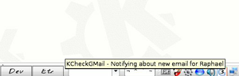
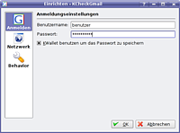
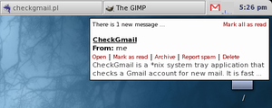

Gmail
Zum Verständnis dieses Artikels sind folgende Seiten hilfreich:
Gmail  (ehemals Google Mail) ist ein kostenloser E-Mail-Dienst (Freemail) des Suchmaschinenbetreibers Google. Das Postfach hat eine Kapazität von über 10 GiB, wobei ein Dateianhang auf maximal 20 MiB limitiert ist.
(ehemals Google Mail) ist ein kostenloser E-Mail-Dienst (Freemail) des Suchmaschinenbetreibers Google. Das Postfach hat eine Kapazität von über 10 GiB, wobei ein Dateianhang auf maximal 20 MiB limitiert ist.
Der Zugriff kann über eine Weboberfläche sowie über ein E-Mail-Programm via POP3 oder IMAP erfolgen. Während IMAP Vorteile beim Zugriff durch mehrere (mobile) Geräte bietet, ermöglicht der Abruf via POP3 eine komfortable Sicherung des GMail-Postfachs (siehe unten).
E-Mail-Benachrichtigungsprogramme¶
E-Mail-Benachrichtigungsprogramme dienen, wie der Name schon sagt, dazu, dass man bei einer neu eingetroffenen E-Mail benachrichtigt wird.
gm-notify¶
Ab Ubuntu 10.10 kann gm-notify verwendet werden. Folgendes Paket muss installiert [1] werden:
gm-notify (universe)
 mit apturl
mit apturl
Paketliste zum Kopieren:
sudo apt-get install gm-notify
sudo aptitude install gm-notify
Eine ältere Version für Ubuntu 10.04 findet man auf der Homepage  .
.
KCheckGmail¶
KCheckGmail ist ein Programm, das sich im Systemabschnitt der Kontrollleiste platziert und den Benutzer benachrichtigt, wenn dieser eine neue E-Mail-Nachricht erhalten hat. Folgendes Paket muss installiert [1] werden:
kcheckgmail (universe)
mit apturl
Paketliste zum Kopieren:
sudo apt-get install kcheckgmail
sudo aptitude install kcheckgmail
Funktionen¶

kleine Dateigröße
unterstützt verschiedene Sprachen
unterstützt den Empfang und Versand von Nachrichten unter der bei Google Mail angegebenen eigenen Internet-Domäne
zeigt E-Mail-Ausschnitt an
Schlummermodus
sichert das Passwort sicher in KWallet
Überprüfungsintervall einstellbar
unterstützt Proxy-Server
sicheres Einloggen und Datenabfrage mit HTTPS
Benutzung/Konfiguration¶

Für den ersten Start kann man das Programm unter "K-Menü -> Internet -> KCheckGmail" starten.
Beim ersten Start öffnet sich ein Assistent, wo man bequem die eigenen Daten eingeben kann. Dort gibt man dann den Benutzernamen ein (steht vor dem @) und das dazugehörige Passwort.
Wenn eine neue E-Mail im Postfach eingetroffen ist, wird man über das Symbol in der Kontrollleiste und ein Pop-up benachrichtigt.
CheckGMail¶

Ein weiteres Programm, das ähnlich wie KCheckGMail arbeitet, ist CheckGMail. Dieses Programm platziert sich ebenso in der Kontrollleiste und benachrichtigt den Nutzer bei neu eingetroffener E-Mail. Folgendes Paket muss installiert [1] werden:
checkgmail (universe )
mit apturl
Paketliste zum Kopieren:
sudo apt-get install checkgmail
sudo aptitude install checkgmail
Funktionen¶
kleine Dateigröße, schnell und elegant
Kann E-Mail öffnen, als gelesen markieren, archivieren, löschen und als Spam markieren
unterstützt verschiedene Sprachen
zeigt E-Mail-Ausschnitt an
kann in mehreren Instanzen ausgeführt werden, um verschiedene Google Mail-Konten zu überprüfen
kann verschiedene Kommandos ausführen (z.B. Musik abspielen, LED aktivieren), wenn eine neue E-Mail eintrifft
unterstützt den Empfang und Versand von Nachrichten unter der bei Google Mail angegebenen eigenen Internet-Domäne
verschiedene Passwort Speichermöglichkeiten
Überprüfungsintervall einstellbar
unterstützt Proxy-Server
KWallet¶
Damit CheckGMail auf den Passwort-Speicher KWallet von KDE zugreifen kann, benötigt man das Skript kwallet  .
.
In dem Ordner, wohin kwallet heruntergeladen wurde, gibt man in einem Terminal-Fenster folgenden Befehl ein, um kwallet systemweit allen Benutzern zur Verfügung zu stellen:
sudo cp kwallet /usr/local/bin
Firefox-Plugins¶
Folgende Firefox-Erweiterungen sind zu empfehlen:
Google Mail Notifier
- Zeigt an, ob neue E-Mails eingetroffen sind. Google Mail Manager
- Alternative zu Google Mail Notifier.
Alternativen¶
Man kann natürlich auch das bereits vorhandene E-Mail-Programm oder E-Mail-Benachrichtigungs-Programm benutzen, allerdings sind insbesondere letztere nicht immer an Google Mail angepasst. Zu bevorzugen ist prinzipiell der Zugriff über das Protokoll IMAP, da hier alle Daten auf dem Server bleiben und nicht lokal gespeichert werden. Zwei Programme speziell für IMAP sind Geary und Trojitá.
Ansonsten kann auch das ältere Protokoll POP3 genutzt werden. Wichtig ist dann, die Einstellungen für POP3 richtig vorzunehmen: Allgemein POP3 oder Anleitung für bekannte E-Mail-Clients .
Die Nutzung von POP3 in Kombination mit einem lokal installiertem E-Mail-Programm wie beispielsweise Thunderbird, Claws Mail oder Sylpheed bietet die einfachste Möglichkeit, eine Sicherung des Inhalts eines GMail-Kontos vorzunehmen.
Datenspeicher benutzen¶
Google Mail bietet mittlerweile über 10 GiB Speicherplatz, das reicht für an die 700.000 E-Mails, die man wohl nie ganz ausnutzen wird. Doch kann man nicht nur E-Mails speichern, sondern auch auf den Speicher des Kontos zugreifen, um dort Dateien zu speichern. Dabei helfen spezielle Programme weiter. So kann man den Speicherplatz als Festplatte im Internet benutzen – man hat überall per Internet Zugriff darauf und das Ganze ist kostenlos.
Allerdings ist Folgendes zu beachten:
Die Dateien sind nur durch das Google Mail-Passwort geschützt. Sicher sind Dateien prinzipiell nur auf einem (externen) Datenträger zu Hause oder wenn man sie vor dem Hochladen verschlüsselt.
Alle hochgeladenen Dateien tauchen zusätzlich als E-Mail auf. Damit man nicht mit Daten-E-Mails überflutet wird, wenn man das Konto abfragt, empfiehlt es sich, zur Datenspeicherung ein weiteres Konto bei Google anzulegen.
GSpace (Firefox-Plugin)¶
Hinweis:
Um GSpace nutzen zu können, muss in den Google Mail-Einstellungen für die Browserverbindung "Nicht automatisch https verwenden" ausgewählt sein.
Funktionen¶
Aussehen und Gestaltung wie ein FTP-Client
MP3-Player, spielt gespeicherte Audiodateien ab
Photo-Modus, präsentiert die gespeicherten Fotos im Firefox
Installation¶
PlugIn von der Herstellerseite oder von addons.mozilla.org als Erweiterung installieren und die Login-Daten eingeben.
GMailFS¶
Dieses Programm bindet den Datenspeicher als Laufwerk unter Linux ein. Näheres dazu auf der Projektseite .
Cloud-Dienste¶
Alternativ können auch andere Dienste im Internet zur Datenspeicherung genutzt werden. Es gibt immer mehr kostenlosen Speicherplatz im Internet. Beispiele findet man im Artikel Cloud-Dienste.
Problembehebung¶
Mailto an Google Mail weiterleiten¶
Normalerweise öffnet sich das voreingestellte E-Mail-Programm, wenn man auf eine verlinkte E-Mail-Adresse klickt (mailto:). Allerdings kann man statt eines Programms auch Google Mail im selben Browser öffnen lassen. Eine Anleitung dazu kann man hier finden: ubuntuforums.org
Links¶
Ungelesene Mails mit Conky auflisten
- Blogbeitrag, 03/2009Userspace-Dateisysteme unter Linux
- Linux-Magazin, 01/2005
- Erstellt mit Inyoka
-
 2004 – 2017 ubuntuusers.de • Einige Rechte vorbehalten
2004 – 2017 ubuntuusers.de • Einige Rechte vorbehalten
Lizenz • Kontakt • Datenschutz • Impressum • Serverstatus -
Serverhousing gespendet von